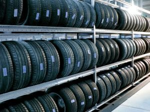

Только шины.
Комплект из 4 штук · 6 месяцев
2 700 ₽
Обсудить хранениеЗимний или летний комплект дождётся своего сезона
на тёплом складе. А дома останется место для жизни.
Комплект из 4 штук · 6 месяцев
Комплект из 4 штук · 6 месяцев
Цена не зависит от диаметра колёс. Стоимость по данным исходного сайта от 11.10.2026; подтвердите её при обращении.

Шиномонтаж и склад находятся вместе, в черте города.
При сдаче колёс оформляются договор и акт приёмки.
Шины хранятся на полках, с периодическим вращением.
Цена зависит от наличия дисков, а не от диаметра колёс.
Выберите удобный центр.
Обсудим работы и время по телефону.